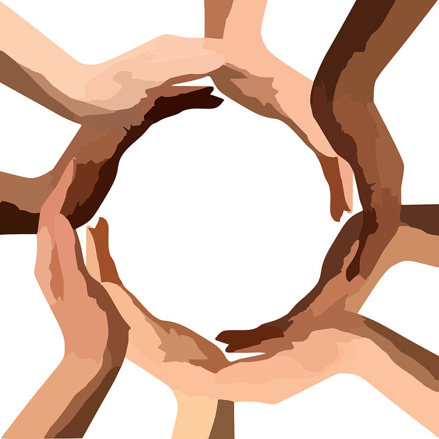

Healthcare access can also be limited for these groups by communication and language barriers; cultural differences between patients and providers; and historical and current discrimination in healthcare systems, all factors that could be fought against with a movement to better accommodate minorities. With testimony like: “Health care organizations sometimes have done harmful experiments on patients without their knowledge” from the members of the minority communities it may be difficult to see a path forward in overcoming the great inequities seen in the COVID-19 effects on the world. (Arnett, M. J., et al., 2016) However, there are some ways for this barrier to be overcome. Through the promotion of Community and faith-based organizations, policy makers, healthcare systems and providers, public health agencies, employers, and the promotion of healthcare education and fair access to healthcare can prevent the spread of COVID-19 in these communities. The change from disparity to equality of outcome will come about when major focus is put on “culturally competent” education and prevention campaigns, health promotion and disease prevention programs, recovery strategy, and occupational risk reduction. (Public Health England, 2020, p. 10-11) These will all help to protect and rebuild these communities during and after the pandemic.
